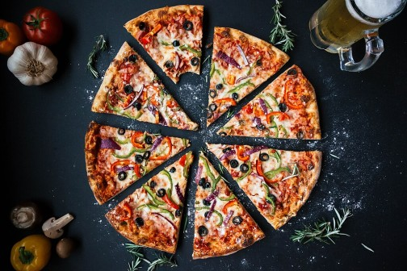

HOME
PIZZA

DESCRIPTION :
Pizza, a globally adored culinary masterpiece, is a true triumph of simplicity and flavor. At its core, pizza is a round, thin crust of dough, expertly baked to achieve a delightful balance of crispiness on the outside and a tender, chewy texture on the inside. What makes pizza truly magical, however, is its diverse array of toppings. From the classic Margherita with its vibrant tomato sauce, creamy mozzarella cheese, and fragrant basil leaves to the inventive and adventurous combinations like pepperoni and pineapple or barbecue chicken with red onions, pizza is a canvas for culinary creativity. It's a dish that effortlessly bridges cultures and palates, offering a universal comfort that transcends borders.
The allure of pizza extends beyond its taste. It's a communal food, meant to be shared among friends and family. The aroma of a freshly baked pizza, with cheese bubbling and toppings sizzling, can transform any gathering into a festive occasion. Whether enjoyed in a cozy Italian trattoria, from a neighborhood pizzeria, or straight from your own oven, pizza's irresistible combination of a crispy crust, savory sauce, melty cheese, and an endless variety of toppings makes it an enduring symbol of comfort and culinary ingenuity
INGREDIENTS :
- Yeast
- Sugar
- Olive oil
- Tomato sauce
- Mozzarella Cheese
- Garlic
- Onion
- Mushroom
- Fresh herbs
PREPARATIONS STEPS :
- Preheat Your Oven: Preheat your oven to the highest temperature it can go, usually around 500°F (260°C). If you have a pizza stone, place it in the oven during preheating to get it hot.Prepare Your Work Surface: Sprinkle a clean countertop or work surface with a bit of flour. This prevents the dough from sticking
- Roll Out the Dough: Take your pizza dough and gently flatten it with your hands. Then, using a rolling pin, roll it out into your desired pizza shape. If you like a thicker crust, roll it out less; for a thinner crust, roll it out more. Aim for about 12-14 inches in diameter.
- Transfer to a Pizza Peel or Baking Sheet: If you have a pizza peel (a flat, shovel-like tool), dust it with flour and transfer the rolled-out dough onto it. If you don't have a peel, you can use a baking sheet instead, sprinkled with a bit of cornmeal or flour to prevent sticking.
- Add Sauce: Spoon your pizza sauce onto the dough and spread it evenly, leaving a small border around the edges for the crust.Add Cheese: Sprinkle a generous amount of shredded mozzarella cheese over the sauce.
- Add Toppings: Now, add your desired toppings. Be creative and feel free to mix and match ingredients.
- Drizzle with Olive Oil: Drizzle a little olive oil over the top of the pizza. This adds flavor and helps the toppings cook and brown nicely.
- Bake: If you're using a pizza stone, carefully slide the pizza from the peel onto the hot stone in the oven. If you're using a baking sheet, simply place the baking sheet in the oven. Bake for about 10-15 minutes or until the crust is golden and the cheese is bubbly and slightly browned.
Cool and Slice: Remove the pizza from the oven and let it cool for a minute or two. Then, use a pizza cutter or a sharp knife to slice it into pieces.Serve: Serve your homemade pizza hot, and enjoy!